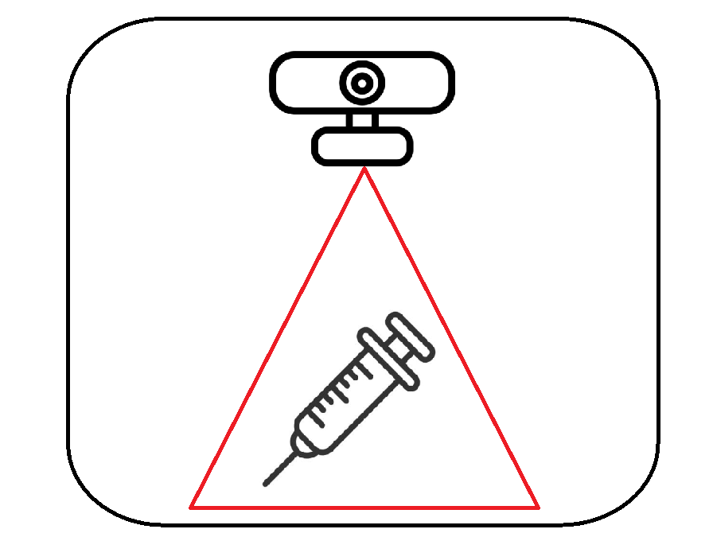

×

Introdução
Nosso projeto, chamado "Categorizador de Resíduo Hospitalar", tem como objetivo detectar e categorizar diferentes tipos de lixo, sejam eles comuns ou hospitalares. O programa realizará a detecção através de uma câmera e exibirá, em uma janela na tela do computador, a categoria do lixo e o nível de confiabilidade dessa categorização. As categorias para lixo hospitalar são: Low (menos perigosos), Medium e High (mais perigosos).
Para fins de simplificação, serão disponibilizados quatro objetos hospitalares para manuseio e teste do sistema. Os objetos deverão ser dispostos em frente à câmera, de modo a serem visíveis na tela do computador.

Procedimento experimental
- 1) Escolha um objeto;
- 2) Posicione ele de frente para a webcam, de modo que o objeto esteja visível na janela do programa;
- 3) Verifique a categoria apresentada na janela;
- 4) Teste com outros objetos, inclusive objetos pessoais.
Questionário
Clique aqui para acessar o questionário.